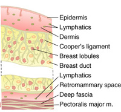
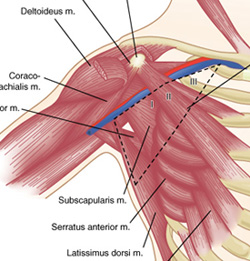
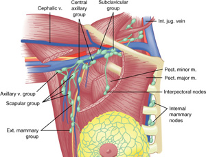
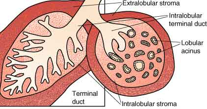

Surgical
Anatomy
1.
Retromammary space
Contains lymph and small vessels.

2. Axilla
Begins at the edge of pec minor
- contains an average of 50 nodes in a radical mastectomy
- less are retrieved with current less-radical approaches.
- apex is Halstead's ligament (costoclavicular ligament)
--> here the axillary vein passes to thorax --> subclavian vein.
3. Axillary Nodal Levels
I : lat to pec minor
- external mammary, scapular, axillary vein, central axillary groups.
II : beneath pec minor
III : medial to pec minor
- include subclavicular nodes
Rotter's nodes : (intra-pectoral
group)
- b/n the pecs, not removed in typical surgical procedures.

4. Flow of Lymph
Skin --> subareolar plexus --> intralobular lymphatics of breast
parenchyma.
75% --> axilla
25% --> pectoral nodes / internal mammary nodes.

5. Nerves
Long thoracic: Runs down on medial axillary wall, close to chest wall
--> serratus anterior.
Thoracodorsal: from posterior cord --> lat dorsi.
Pectoral nerve bundle: around lat border pec minor.
Intercostobrachials: sensate to arm.
- denervation leads to chronic / uncomfortable pain in a minority.
- leave the superior-most if possible; sensation to posterior upper arm.
6. Microscopic Anatomy
Typically it is said that mammorgraphy in women <30 is not useful
due to dense glandular tissue
- this is not always true.
- fat provides the definition in older women.
Lobules drain into ductules; surrounded by myoepothelial cells.
The basement membrane defines DCIS vs invasive breast cancer.
